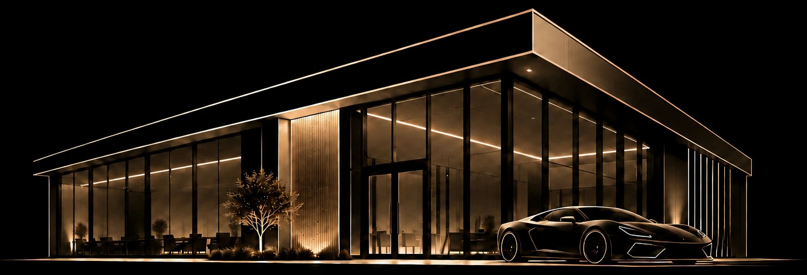

01
Commercial
Ground-up buildings, shell construction and tenant build-outs across the Austin market. We carry the plan set, the permit and the subcontractor schedule from site survey to certificate of occupancy.
RAS Development builds commercial and residential projects across the Austin area. Preconstruction, permitting and construction stay with one team — one point of contact, one schedule and one budget you can check at any time.
Ground-up buildings, shell construction and tenant build-outs across the Austin market. We carry the plan set, the permit and the subcontractor schedule from site survey to certificate of occupancy.
Custom homes and whole-house remodels, built to the details the architect drew. One point of contact from the first walk of the lot to the final punch list.
Homes we site, design and build on our own land, then take to market. Land, plans, construction and sale handled in-house.
Projects where we put our own capital in alongside yours instead of simply billing the work. Acquisition, entitlement, construction and exit, structured deal by deal.
Every project starts as a set of plans and ends as a building somebody uses every day. Scroll to watch one come up out of the drawings.

We walk the site with you and get clear on the budget, the timeline and what the finished building has to do.
Plans, permits and a line-item budget are settled before any trade mobilizes, so the number you approve is the number we build to.
Grading, utilities, foundation and framing go in against a schedule you can check at any time.
Mechanical, electrical and plumbing rough-in, then inspections and finishes installed to the spec the drawings call for.
We walk the finished building with you, close out the punch list, hand over warranties and close-out documents, and turn over the keys.
Your request is with the RAS Development team. We'll get back to you within one business day.